Alles andere, ganz oben
Die Menüs der aktuellen App, Ton und Helligkeit, Kalender, Benachrichtigungen und Suche starten alle in einer Leiste oben. Ein Klick darauf nimmt der App, in der du tippst, nie den Fokus.
Menüleiste
Die Menüs der aktuellen App, oben
Apps mit Menüs zeigen sie unverändert. Für Apps ohne Menü, etwa Browser, Datei-Explorer oder Notion, gibt es ein Menü mit ihren gängigen Tastenkürzeln. Ein Klick schickt das Kürzel direkt an die App – praktisch, wenn Tasten nicht durchkommen, etwa per Remotedesktop.


Ton und Helligkeit mit einem Klick
Im Kontrollzentrum hast du Bildschirmhelligkeit, Nachtmodus und Energiemodus zur Hand. Das Tonmenü wechselt Aus- und Eingabegeräte und die Lautstärke, und über das Bluetooth-Menü verbindest du deine Kopfhörer mit einem Klick.

Klick auf die Uhr für den Kalender
Der Kalender zeigt koreanische Feiertage und Mondkalenderdaten (Feiertage anderer Länder gibt es noch nicht). Füg eine iCal-Adresse aus Google Kalender oder Outlook.com ein, um auch deine Termine zu sehen.

Benachrichtigungen
Ruhige Banner oben rechts
Windows-Benachrichtigungen erscheinen als Banner oben rechts, lange klappst du mit einem Klick auf. Etwas verpasst? Klick auf die Uhr, um Benachrichtigungen nach App gruppiert zu sehen.
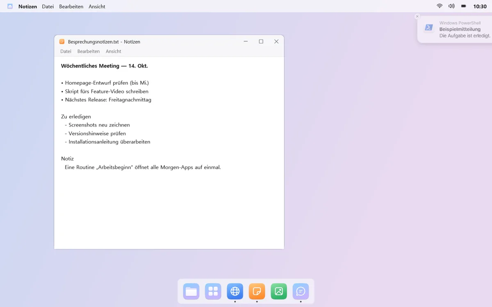
Zweimal hüpfen, dann ein Punkt
Kommt eine Benachrichtigung, hüpft das Dock-Symbol der App zweimal und hinterlässt einen roten Punkt. Es hüpft nicht weiter, und du kannst es pro App ausschalten.
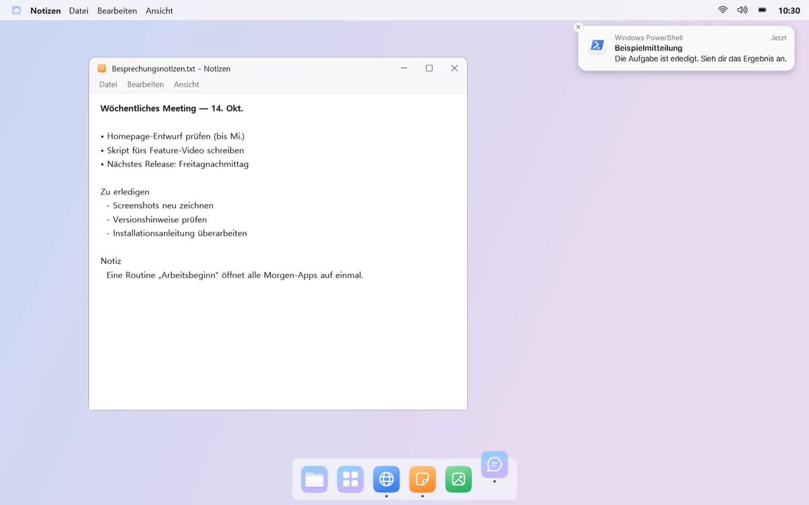
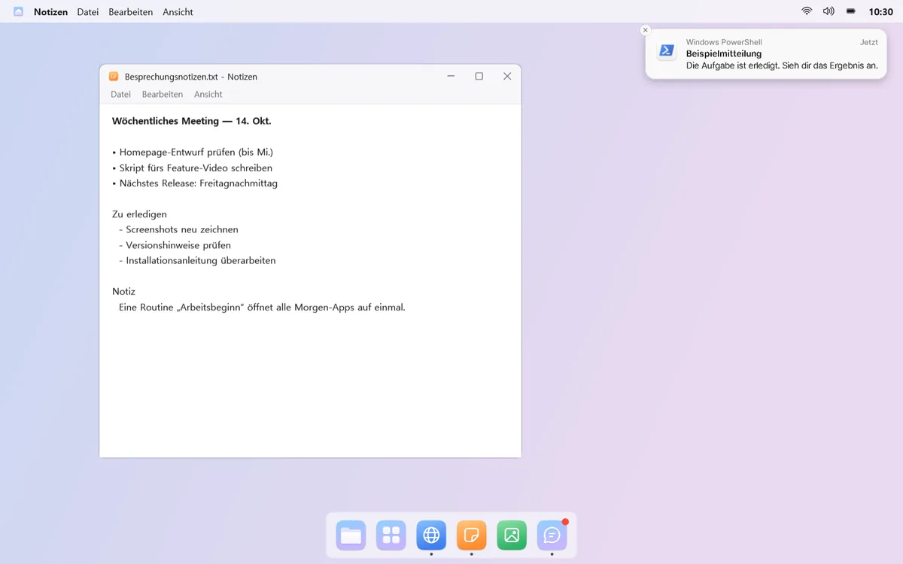
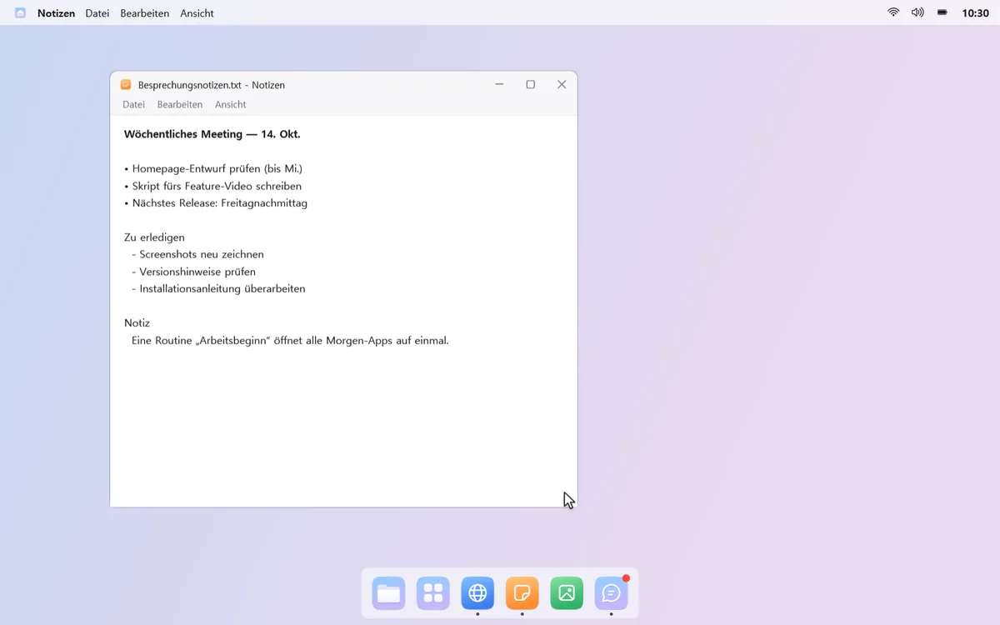
mongdock-Suche
Mit ein paar Tasten gefunden
Drück ein Tastenkürzel, und in der Bildschirmmitte öffnet sich ein Suchfeld. Finde Apps, Windows-Einstellungen sowie Dateien und Ordner mit ein paar Tastendrücken, etwa „Re“ für den Rechner.
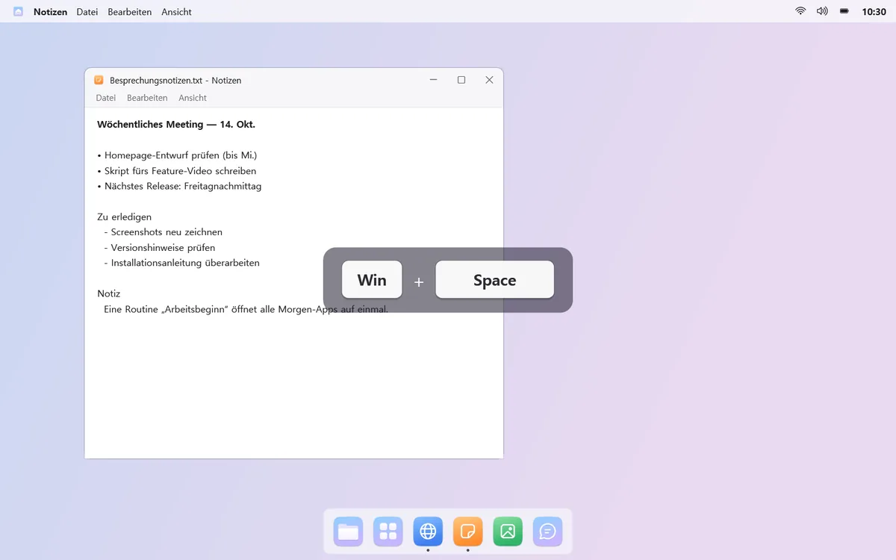
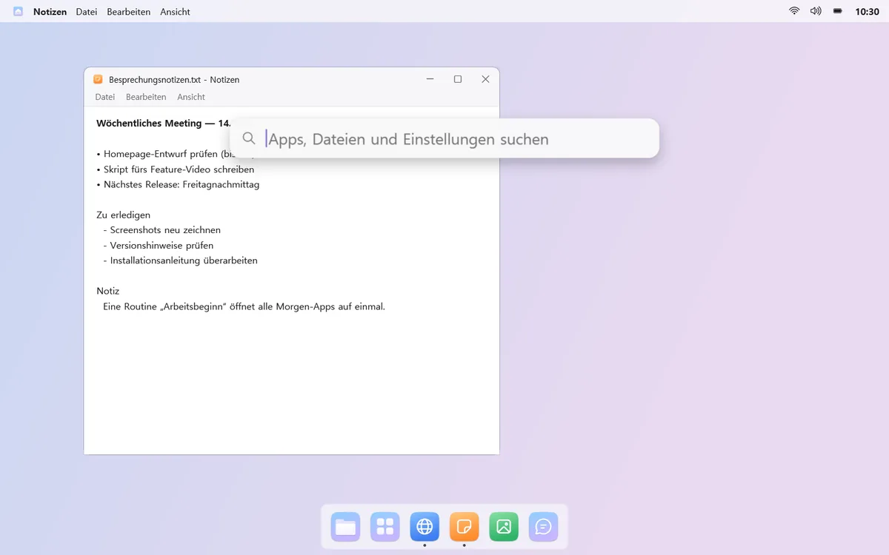
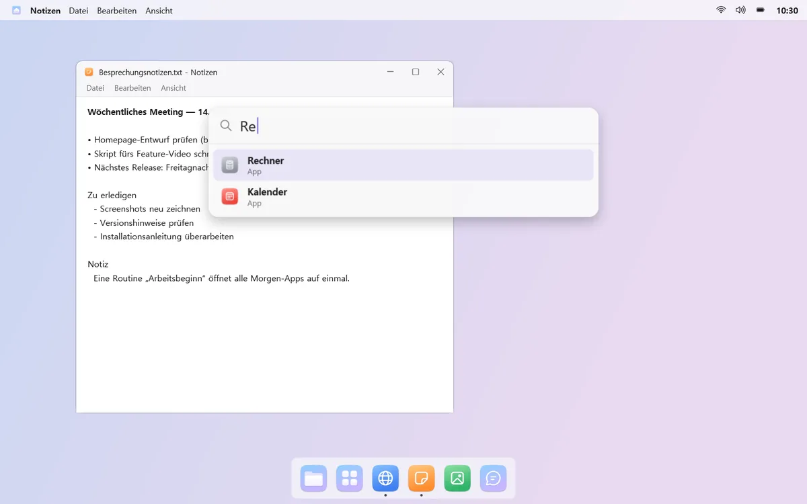
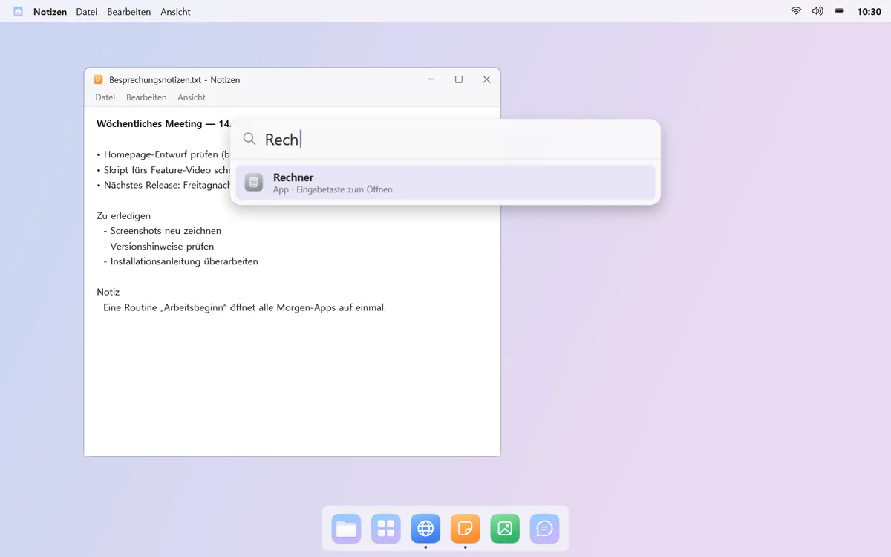
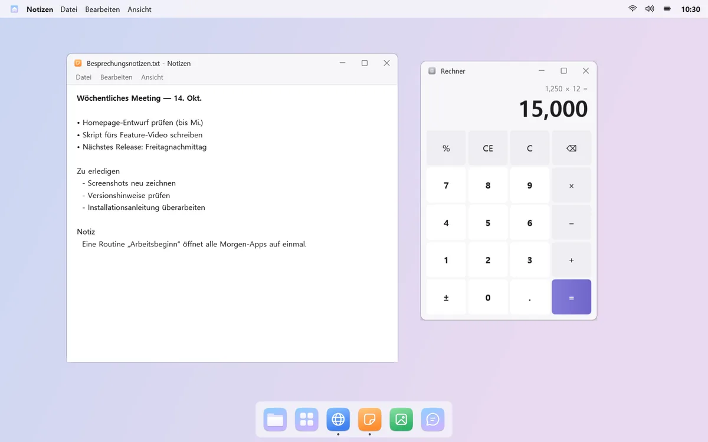
Schnell rechnen und im Web suchen
Tipp etwas wie „200*15%“, und das Ergebnis steht oben; Enter kopiert es. Nichts gefunden? Schick dieselbe Suche an die Windows-Suche oder ins Web.

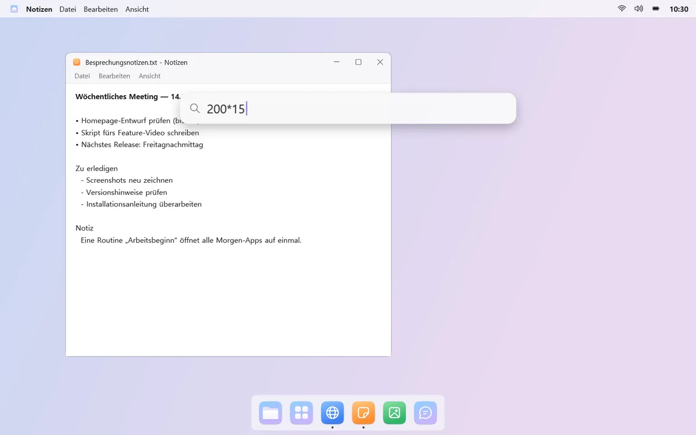
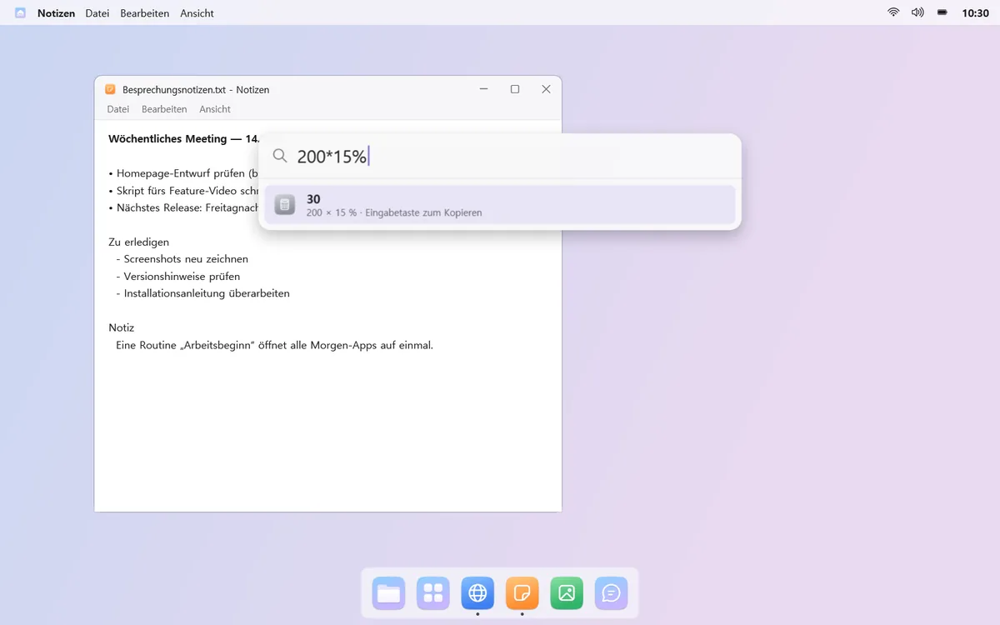
Gut zu wissen
- Nach der ersten Änderung des Benachrichtigungstons musst du dich einmal ab- und wieder anmelden, damit er wirkt.
- Die Helligkeit externer Monitore lässt sich nur bei Monitoren ändern, die das unterstützen (DDC/CI).